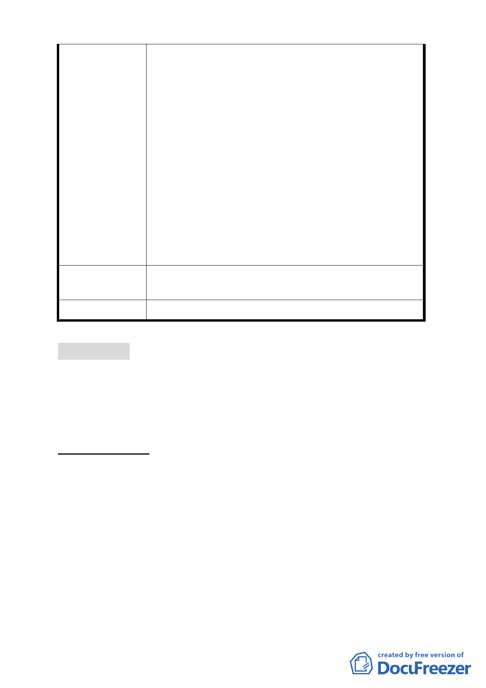

購物中心使用)及娛樂區(供娛樂購物中心使用)
申請住宅使用之樓地板面積不得超過法定容積之
二分之一、地面層l~3樓作指定項目使用、高度不
得超過90公尺±l0公尺…)，有否重行組成小組會
議，推翻前次大會審議共識之理？
五、民間企業配合政府政策推動「促進都市再生2010
年臺北好好看」開發案不應被視為盜匪，著眼良策
混沌不明、投資風險無法掌握，勢必將政府、產發
學界及開發商、地主先前努力付諸東流、回至原
點，不免陳情人等戒慎恐懼必須正視問題提出拙見
供相關單位慎量，以挽政府威信及落實政策執行貫
徹力。
六、敬祈鈞局酌參，俾維市府政策執行之貫徹及土地
所有權人合法權益。
建議辦法
陳請從速審查坐落臺北市中山區金泰段「促進都市再生
2010 年臺北好好看」開發計畫案。
委 員 會 決 議 所提建議業已錄案供委員審議參考。
討論事項 三
案名：修訂臺北市基隆河（中山橋至成美橋段）附近地區細部計
畫商業區（供商業購物中心使用）街廓編號 A2 基地（中山
區金泰段 105 地號）土地使用分區管制規定與都市設計管
制要點計畫案
案情概要說明：
一、 本計畫區位於街廓編號 A2 商業區（供商業購物中心使用）範
圍內，基地北側臨 15M 樂群三路，東側臨 20M 敬業三路，面
積共計 6,213.16 平方公尺。本計畫原使用分區為商業區（供
商業購物中心使用），建蔽率 60％、容積率 250％，土地權屬
為私人所有，其現況使用為空地。
二、 變更計畫緣起與目的：
本案係市府審查通過推薦之「促進都市再生 2010 年臺北好好
看」開放計畫案之（科技產業軸帶類），土地所有權人依都市
計畫法第 24 條研提本修訂計畫案。
三、 變更計畫內容概述：
- 14 -